Regression Analysis of Crime Rates in New York State
An English version brief summary of our 2023 county-level regression analysis on New York State crime rates, using Box–Cox transformation and model selection via AIC/BIC. The full report (in Mandarin) is available below.
📄 Download Full Report (PDF)Abstract
We analyze the determinants of crime rate disparities across New York counties in 2023 using a multiple regression framework combined with a Box–Cox transformation to address non-normality and heteroskedasticity. Among nine socioeconomic and demographic variables tested, model selection based on AIC/BIC indicates that median household income, share of college-educated adults, and log total population are the key drivers of crime rate variation. The final model achieves an adjusted R² of 0.615 and shows strong statistical significance overall (F = 33.47, p < 0.001). The results demonstrate that higher income levels are associated with lower crime rates, while education attainment and population scale exhibit positive relationships, reflecting urban concentration effects.
Key Findings
The final Box–Cox transformed model is expressed as:
$$\sqrt{\hat{y}} = -6.538 - 0.0003913\,MI + 0.5123\,BoH + 5.074\,\log(TP)$$
- F-Statistic: 33.47 on 3 and 58 degrees of freedom
- p-value (overall model): 1.099×10⁻¹²
- R²: 0.6338 Adjusted R²: 0.6149
- Coefficients:
- MI: β = −0.0003913 p < 0.001
- BoH: β = 0.5123 p < 0.001
- log-TP: β = 5.074 p < 0.001
All predictors are statistically significant, with higher education level (BoH) and population size showing positive associations with crime rate, while median income exhibits a negative relationship.
Variables Used
We employed one dependent variable and nine explanatory variables.
Dependent Variable (Y)
- ICR (Index Crime Rate): The total number of index crimes (murder, non-negligent manslaughter, rape, robbery, aggravated assault, burglary, larceny, motor vehicle theft, arson, and shoplifting) per 100,000 residents in each county.
Explanatory Variables (X)
- PI – Poverty Incidence: Percentage of people below the poverty threshold as defined by the U.S. Census Bureau.
- MI – Median Income: Median household income in each county.
- UR – Unemployment Rate: Percentage of unemployed individuals in the labor force.
- PD – Population Density: Number of residents per square mile.
- TP – Total Population: Total number of residents in each county (later log-transformed for modeling).
- Age25_44 – Population Aged 25–44: Proportion of residents aged between 25 and 44.
- BoH – Bachelor’s Degree or Higher: Percentage of residents aged 18 or above with at least a bachelor’s degree.
- ND – No High School Diploma: Percentage of residents aged 18 or above without a high school diploma.
- NYC Dummy: A binary variable equal to 1 if the county belongs to one of New York City’s five boroughs (Manhattan, Brooklyn, Queens, Bronx, or Staten Island), and 0 otherwise.
All explanatory variables were obtained from the U.S. Census Bureau (2023), while the dependent variable (ICR) was derived from the NYPD’s 2023 official crime statistics. Log transformations were applied to highly skewed variables (PD and TP) to reduce outlier effects and improve linearity.
Exploratory Analysis
Before model estimation, scatterplots were used to examine the relationships between each explanatory variable and the index crime rate (ICR) across New York counties. The first figure below displays the pairwise relationships for all nine variables. Visual inspection suggests that some predictors, such as Total Population (TP) and Population Density (PD), exhibit a highly non-linear association with ICR.

Figure 1. Scatterplots of the index crime rate (ICR) against each explanatory variable.
To mitigate this non-linearity and improve the interpretability of the regression model, we applied a log transformation to both PD and TP. The following figure demonstrates that the log-transformed variables show a more linear relationship with ICR, supporting their use in the final model specification.

Figure 2. Scatterplots of ICR versus log-transformed Population Density and Total Population.
Initial Model (Full Specification)
The initial regression includes all explanatory variables to assess overall fit and individual significance before model selection. The full specification is:
$$Y \;=\; \beta_0 \;+\; \beta_1\,PI \;+\; \beta_2\,MI \;+\; \beta_3\,UR \;+\; \beta_4\,\log(PD) \;+\; \beta_5\,ND \;+\; \beta_6\,\text{Age25--44} \;+\; \beta_7\,\log(TP) \;+\; \beta_8\,BoH \;+\; \beta_9\,D \;+\; \varepsilon$$
- Overall fit: F = 12.40 on 9 and 52 df, p < 0.001; Adjusted R² ≈ 0.627.
- Significant predictors: MI, BoH, log(TP) show clear significance; others are not significant at conventional levels.
- Multicollinearity: VIF values indicate notable collinearity for log(PD) (≈ 16.35), and elevated values for log(TP) (≈ 8.07) and MI (≈ 6.66).
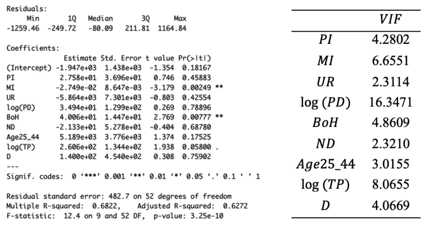
Model Selection
We summarize stepwise searches (forward, backward, stepwise) under AIC and BIC, and report the best all-subsets combinations. Values are rounded to match the original output.
| Method | Criterion | Selected variables | AIC | BIC | Adjusted R² |
|---|---|---|---|---|---|
| Forward | AIC | log(TP), MI, BoH, Age25–44 | 944.7516 | 957.5144 | 0.6518 |
| Forward | BIC | log(TP), MI, BoH | 946.6742 | 957.3099 | 0.6354 |
| Backward | AIC | log(TP), MI, BoH, Age25–44 | 944.7516 | 957.5144 | 0.6518 |
| Backward | BIC | log(TP), MI, BoH | 946.6742 | 957.3099 | 0.6354 |
| Stepwise | AIC | log(TP), MI, BoH, Age25–44 | 944.7516 | 957.5144 | 0.6518 |
| Stepwise | BIC | log(TP), MI, BoH | 946.6742 | 957.3099 | 0.6354 |
Across methods, AIC favors adding Age25–44, while BIC (with a stronger penalty on extra parameters) prefers the more parsimonious specification log(TP), MI, BoH.
| Combination | Adj R² | AIC | BIC | Cp |
|---|---|---|---|---|
| MI + BoH + log(TP) | 0.6354 | 946.6742 | 957.3099 | 2.7283 |
| MI + BoH + log(TP) + Age25–44 | 0.6518 | 944.7516 | 957.5144 | 1.2504 |
| MI + BoH + log(TP) + log(PD) | 0.6402 | 946.7843 | 959.5471 | 3.0252 |
| MI + BoH + log(TP) + D | 0.6368 | 947.3741 | 960.1369 | 3.5511 |
| MI + BoH + log(TP) + ND | 0.6310 | 948.3347 | 961.0975 | 4.4185 |
| MI + BoH + log(TP) + PI | 0.6304 | 948.4448 | 961.2076 | 4.5188 |
| MI + BoH + log(TP) + UR | 0.6298 | 948.5397 | 961.3025 | 4.6054 |
| MI + BoH + log(TP) + log(PD) + Age25–44 | 0.6476 | 946.3969 | 961.2868 | 2.9466 |
| MI + BoH + log(TP) + PI + Age25–44 | 0.6471 | 946.4854 | 961.3753 | 3.0223 |
Interpretation: AIC’s best model includes Age25–44, but the BIC-best model—log(TP), MI, BoH—is preferred due to its simplicity and comparable explanatory power.
Model Diagnostics
The regression model using MI, BoH, and log(TP) was further evaluated to verify the assumptions of multiple linear regression. We examined whether the residuals satisfy the following assumptions:
- \(E(e_i) = 0, \quad i = 1, \ldots, n\)
- \(Var(e_i) = \sigma^2, \quad i = 1, \ldots, n\)
- \(Cov(e_i, e_j) = 0, \quad i \neq j\)
The following diagnostic plots show the normality, homoscedasticity, and independence of residuals.
sess normality, homoscedasticity, and independence of residuals.Normality
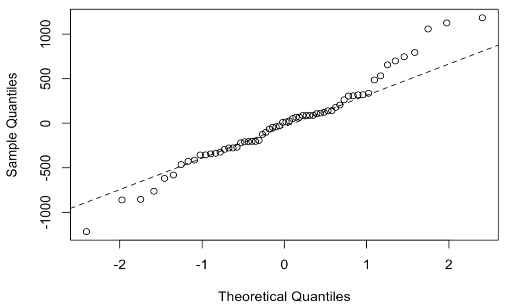
Figure: Q-Q plot
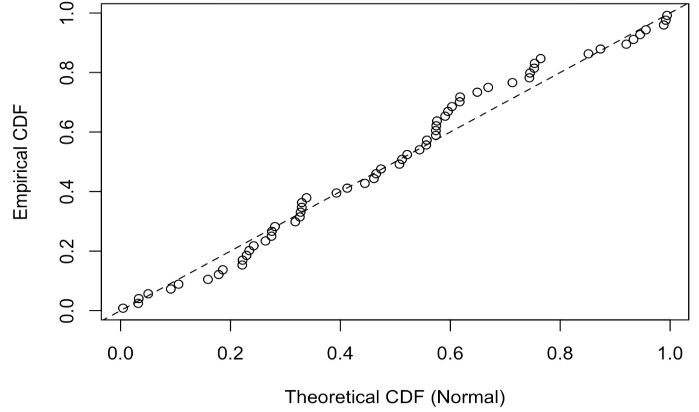
Figure: P-P plot
The Q-Q and P-P plots show that there are slight deviations occur in the tails, suggesting non-normality behavior.
Homoscedasticity
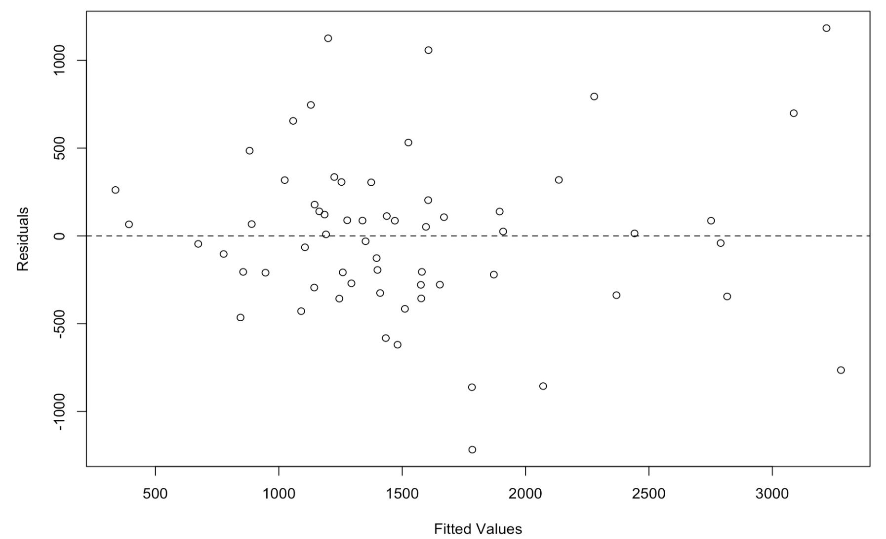
Figure: Residual Plot
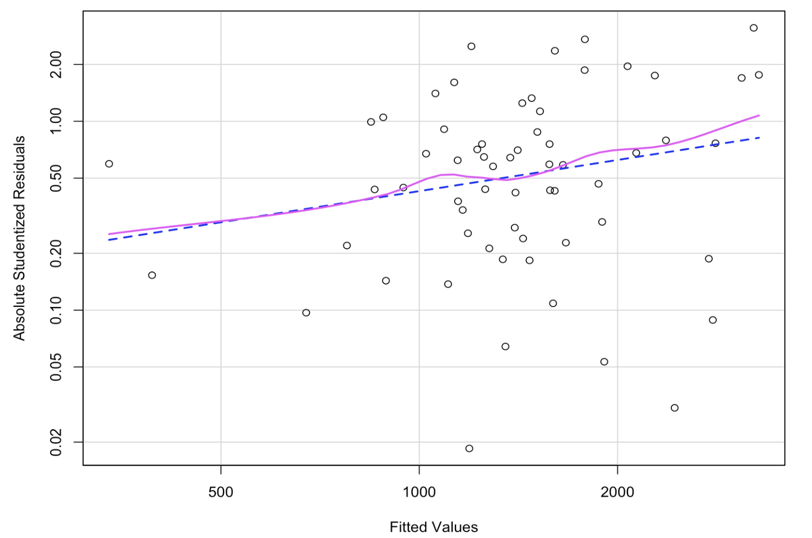
Figure: Spread-Level plot
Both plots suggest heteroskedasticity. The residuals exhibit greater dispersion at higher fitted values, showing that the variance of errors is not constant.
Independence
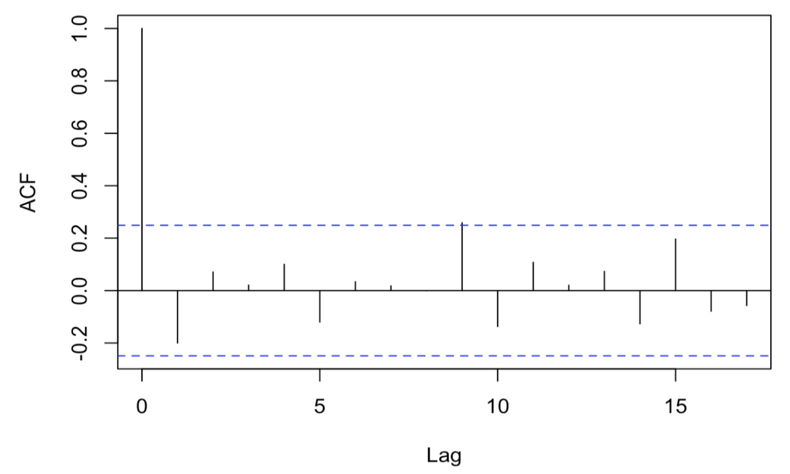
Figure: ACF
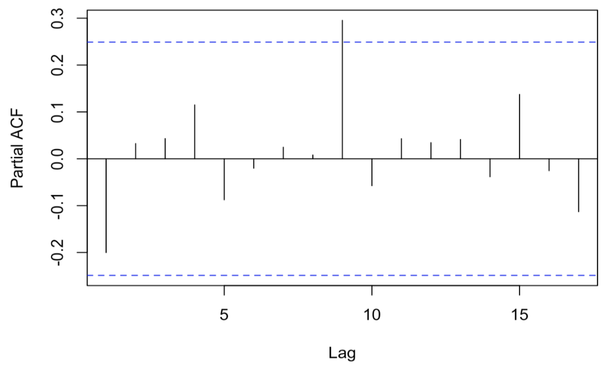
Figure: PACF
The ACF and PACF plots indicate no significant serial correlation, confirming that the residuals are independent.
Overall, the diagnostics indicate limited support for normality, clear evidence of heteroskedasticity, and no sign of autocorrelation. Since the multiple linear regression assumptions are not fully met. Therefore, a Box–Cox transformation was applied to stabilize normailty and variance and enhance model validity.
Box–Cox Transformation
The Box-Cox transformation is defined as follows:
$$\psi(y; \lambda) = \begin{cases} \dfrac{y^{\lambda} - 1}{\lambda}, & \text{if } \lambda \neq 0 \\\\[8pt] \log(y), & \text{if } \lambda = 0 \end{cases}$$
The estimated optimal value of \(\lambda\) is 0.424, which is approximately 0.5. Therefore, we adopted the simpler square-root transformation, \(\psi(y) = \sqrt{y}\), as it provides a nearly equivalent adjustment while maintaining interpretability.
Transformed Model
The regression model after transformation is expressed as:
$$\sqrt{y} = \beta_0 + \beta_1 MI + \beta_2 BoH + \beta_3 \log(TP) + \varepsilon$$
The estimated coefficients and overall model performance are summarized below:
- F-Statistic: 33.47 on 3 and 58 degrees of freedom
- p-value (overall model): 1.099×10⁻¹²
- R²: 0.6338 Adjusted R²: 0.6149
- Coefficients:
- MI: β = −0.0003913 p < 0.001
- BoH: β = 0.5123 p < 0.001
- log-TP: β = 5.074 p < 0.001
All three predictors—MI, BoH, and log(TP)—remain highly significant (p < 0.001). The model explains about 61.5% of the variance in the transformed crime rate, indicating a good overall fit. The transformation successfully stabilizes variance and enhances the linearity of relationships among variables.
Model Diagnostics after Box–Cox Transformation
The diagnostic plots below evaluate the normality, homoscedasticity, and independence of residuals after applying the Box–Cox transformation.
Normality
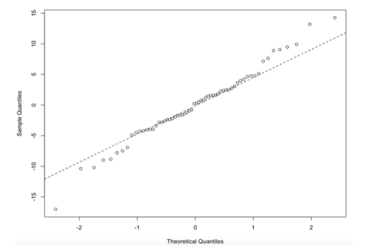
Figure: Q-Q plot
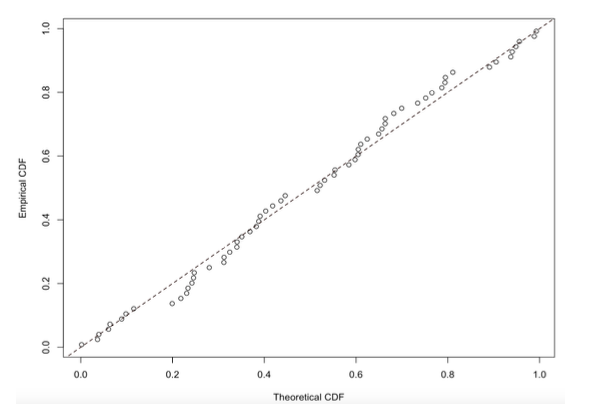
Figure: P-P plot
The Q–Q and P–P plots show that the residuals now align more closely along the diagonal line, with only mild deviations at the tails. This indicates a clear improvement in normality compared with the pre-transformation model.
Homoscedasticity
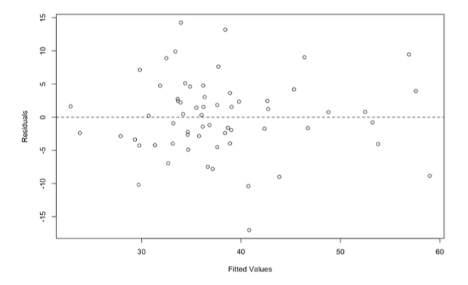
Figure: Residual Plot
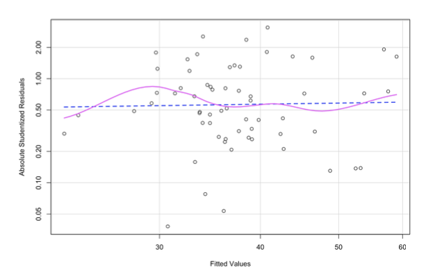
Figure: Spread-Level plot
The residuals are more evenly scattered around zero, and the spread-level plot shows a relatively constant variance across fitted values. This suggests that the heteroskedasticity observed before transformation has been substantially reduced.
Independence
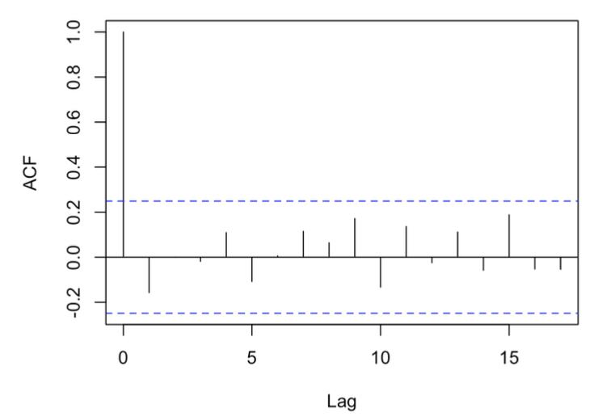
Figure: ACF
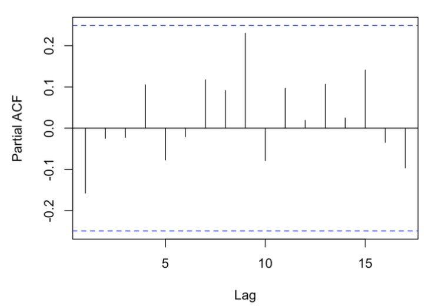
Figure: PACF
The ACF and PACF plots exhibit no significant autocorrelation at any lag, confirming that the residuals remain independent after transformation.
Overall, the diagnostics demonstrate noticeable improvement in all aspects. The residuals show stronger adherence to normality, reduced heteroskedasticity, and preserved independence, indicating that the Box–Cox transformation effectively stabilized variance and enhanced the validity of the regression model.
Results and Discussion
Based on the AIC, BIC, and Cp criteria, we selected the most parsimonious model through a combination of forward, backward, and stepwise regression, followed by an all-subsets comparison. Among the nine explanatory variables—poverty incidence (PI), median income (MI), unemployment rate (UR), log population density (log_PD), log total population (log_TP), share of adults aged 25–44 (Age25_44), share of adults with a bachelor’s degree or higher (BoH), share without a high school diploma (ND), and the New York City dummy variable—the final model retained MI, BoH, and log(TP) as significant predictors of the county-level crime rate.
$$\sqrt{y} = -6.538 - 0.0003913\,MI + 0.5123\,BoH + 5.074\,\log(TP)$$
The final model yields an R² of 0.6338 and an adjusted R² of 0.6149, indicating that these three variables jointly explain about 61% of the variation in crime rates across New York counties. All three predictors are statistically significant at the 1% level (p < 0.01). The signs of the coefficients are consistent with theoretical expectations and prior empirical findings in the literature.
Specifically, median income (MI) shows a negative relationship with the crime rate. Holding other variables constant, a one-unit increase in MI is associated with a decrease of 0.0003913 units in the square-root-transformed crime rate per 100,000 people. In contrast, BoH and log(TP) exhibit positive effects: for every one-percentage-point increase in BoH, the predicted crime rate increases by 0.5123 units, and for each one-unit increase in log(TP), the rate rises by 5.074 units.
These results imply that regions with higher income levels tend to have lower crime rates, consistent with the hypothesis that improved economic conditions reduce criminal incentives. Conversely, more urbanized and highly educated regions display higher reported crime rates, which may partly reflect denser populations, greater law enforcement presence, and broader reporting coverage. Thus, the positive association of education and population with crime rates likely captures urbanization and socioeconomic complexity rather than direct causal effects.
Overall, the model offers a satisfactory explanatory fit and aligns with both statistical assumptions and substantive theory. The findings provide a quantitative basis for understanding socioeconomic influences on crime across New York counties and highlight the interplay between economic well-being, education, and population scale in shaping local crime dynamics.
Conclusion
This study analyzed county-level data from 62 regions in New York State to investigate the socioeconomic determinants of crime rates in 2023. Using multiple linear regression with a Box–Cox transformation, we identified median income (MI), education attainment (BoH), and log total population (log_TP) as the key explanatory variables. The final model achieved an R² of 0.6338 and adjusted R² of 0.6149, demonstrating strong explanatory power and robustness.
The results reveal that higher income levels are associated with lower crime rates, supporting the view that economic well-being mitigates criminal activity. Meanwhile, both educational attainment and total population are positively related to crime rates, a pattern consistent with urban concentration and population density effects. These findings align with previous research (e.g., Schuessler, 1962; Bhattacharya, 2002; Gibbs & Erickson, 1976; Chang, Kim & Jeon, 2019) that links socioeconomic factors—especially income and education—to regional crime variations.
From a policy perspective, these results suggest that socioeconomic and demographic structure plays a critical role in shaping local crime patterns. Regions with larger populations and higher education levels, typically urban areas, report more crimes not necessarily because of higher actual crime incidence, but due to higher reporting intensity and policing coverage. In contrast, less urbanized and lower-income areas may experience underreporting, potentially masking actual crime conditions.
In conclusion, this study provides empirical evidence that economic status, education level, and population scale are key drivers of regional crime disparities. Future research could expand the scope by incorporating temporal data, refining the measure of education quality, and further exploring causal mechanisms behind these relationships to support more targeted social and law enforcement policies.